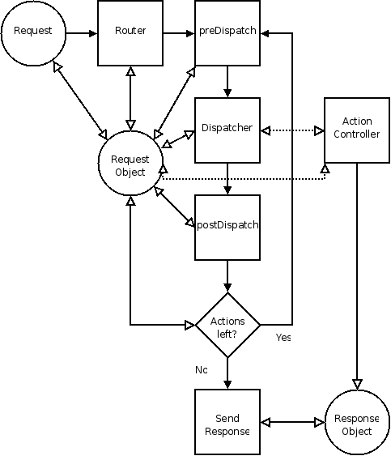

The Zend_Controller system is designed to be
lightweight, modular, and extensible. It is a minimalist design to
permit flexibility and some freedom to users while providing enough
structure so that systems built around Zend_Controller
share some common conventions and similar code layout.
The following diagram depicts the workflow, and the narrative following describes in detail the interactions:

The Zend_Controller workflow is implemented by several
components. While it is not necessary to completely understand the
underpinnings of all of these components to use the system, having a
working knowledge of the process is helpful.
Zend_Controller_Frontorchestrates the entire workflow of theZend_Controllersystem. It is an interpretation of the FrontController pattern.Zend_Controller_Frontprocesses all requests received by the server and is ultimately responsible for delegating requests to ActionControllers (Zend_Controller_Action).-
Zend_Controller_Request_Abstract(often referred to as the Request Object) represents the request environment and provides methods for setting and retrieving the controller and action names and any request parameters. Additionally it keeps track of whether or not the action it contains has been dispatched byZend_Controller_Dispatcher. Extensions to the abstract request object can be used to encapsulate the entire request environment, allowing routers to pull information from the request environment in order to set the controller and action names.By default,
Zend_Controller_Request_Httpis used, which provides access to the entire HTTP request environment. -
Zend_Controller_Router_Interfaceis used to define routers. Routing is the process of examining the request environment to determine which controller, and action of that controller, should receive the request. This controller, action, and optional parameters are then set in the request object to be processed byZend_Controller_Dispatcher_Standard. Routing occurs only once: when the request is initially received and before the first controller is dispatched.The default router,
Zend_Controller_Router_Rewrite, takes a URI endpoint as specified inZend_Controller_Request_Httpand decomposes it into a controller, action, and parameters based on the path information in the URL. As an example, the URLhttp://localhost/foo/bar/key/valuewould be decoded to use the foo controller, bar action, and specify a parameter key with a value of value.Zend_Controller_Router_Rewritecan also be used to match arbitrary paths; see the router documentation for more information. -
Zend_Controller_Dispatcher_Interfaceis used to define dispatchers. Dispatching is the process of pulling the controller and action from the request object and mapping them to a controller file (or class) and action method in the controller class. If the controller or action do not exist, it handles determining default controllers and actions to dispatch.The actual dispatching process consists of instantiating the controller class and calling the action method in that class. Unlike routing, which occurs only once, dispatching occurs in a loop. If the request object's dispatched status is reset at any point, the loop will be repeated, calling whatever action is currently set in the request object. The first time the loop finishes with the request object's dispatched status set (Boolean
TRUE), it will finish processing.The default dispatcher is
Zend_Controller_Dispatcher_Standard. It defines controllers as MixedCasedClasses ending in the word Controller, and action methods as camelCasedMethods ending in the word Action:FooController::barAction(). In this case, the controller would be referred to as foo and the action as bar.![[Note]](images/note.png)
Case Naming Conventions Since humans are notoriously inconsistent at maintaining case sensitivity when typing links, Zend Framework actually normalizes path information to lowercase. This, of course, will affect how you name your controller and actions... or refer to them in links.
If you wish to have your controller class or action method name have multiple MixedCasedWords or camelCasedWords, you will need to separate those words on the url with either a '-' or '.' (though you can configure the character used).
As an example, if you were going to the action in
FooBarController::bazBatAction(), you'd refer to it on the url as/foo-bar/baz-bator/foo.bar/baz.bat. Zend_Controller_Actionis the base action controller component. Each controller is a single class that extends theZend_Controller_Actionclass and should contain one or more action methods.-
Zend_Controller_Response_Abstractdefines a base response class used to collect and return responses from the action controllers. It collects both headers and body content.The default response class is
Zend_Controller_Response_Http, which is suitable for use in an HTTP environment.
The workflow of Zend_Controller is relatively simple. A
request is received by Zend_Controller_Front, which in turn
calls Zend_Controller_Router_Rewrite to determine which
controller (and action in that controller) to dispatch.
Zend_Controller_Router_Rewrite decomposes the URI
in order to set the controller and action names in the request.
Zend_Controller_Front then enters a dispatch loop. It
calls Zend_Controller_Dispatcher_Standard, passing it the
request, to dispatch to the controller and action specified in the
request (or use defaults). After the controller has finished, control
returns to Zend_Controller_Front. If the controller has
indicated that another controller should be dispatched by resetting the
dispatched status of the request, the loop continues and another
dispatch is performed. Otherwise, the process ends.